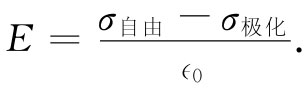
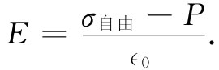

现在让我们来看看，这一模型对于含有电介质的电容器的理论会提供些什么？首先，考虑其中每单位体积含有一定电偶极矩的一片材料。平均说来，是否会存在由此而产生的任何电荷密度？如果P是均匀的，那就不会有。即如果彼此被相对移了位的正电荷和负电荷都有相同的平均密度，那么它们被移了位这个事实就不会在该体积里产生任何净电荷。反之，要是P在某一地方较大而在另一地方较小，那就会意味着被移进某一区域的电荷比移出的要多。因此，我们会预期得到一个体电荷密度。对于平行板电容器来说，我们假定P是均匀的，因而就只需考虑在表面所发生的情况。在一个表面上，负电荷即电子，实际上被移出了一段距离δ；在另一个表面上，它们却向里面移动，因而留下正电荷使之实际上移出一段距离δ。如图10-5所示，我们将有一个称为面极化电荷 的面电荷密度。
图10-5 在均匀电场中的一片电介质。正电荷相对于负电荷被移动了一段距离δ
面极化电荷可以这样计算。设A为板的面积，则出现在板面上的电子数目应等于A，N（单位体积的电子数）及位移δ——这里假定它与板面垂直——三者的乘积。表面电荷可由此再乘上电子电荷qe 而获得。为要得到在表面上感生的极化电荷面密度，我们除以A。因此，面电荷密度的大小为
σ极化 =Nqe δ.
但这恰好等于式（10.4）中极化矢量P的量值：
σ极化 =P. （10.5）
面电荷密度就等于材料内的极化强度。当然，这面电荷在一个面上是正的，而在另一个面上则是负的。
现在让我们假定，上述那块板就是存在于平行板电容器中的电介质。构成电容器的那两块金属板 也带有面电荷，这我们将称之为σ自由 ，因为这些电荷可以在导体上到处“自由”移动。当然，这就是对电容器充电时我们放上去的电荷。必须强调，σ极化 之所以存在只是由于有了σ自由 。如果通过使电容器放电而将σ自由 移去，则σ极化 将消失，但它没有沿放电导线跑掉，而是缩回材料里面去了——由于材料内部极化的衰减。
现在，我们可以将高斯定律用于图10-1的那个高斯面S。电介质里的电场E等于总 的面电荷密度除以∈0 。很明显，σ极化 与σ自由 具有相反符号，因而
 （10.6）
注意！金属板与电介质表面间的电场E0 要比E大一些，它仅对应于σ自由 。但这里我们所关心的却是电介质内部的场，如果电介质几乎充满了两板间的缝隙，那么场就遍及几乎整个体积。利用式（10.5），我们可以写出
 （10.7）
这个式并不会告诉我们关于电场的样子，除非已知道P是什么。然而，这里我们已假定P依赖于E——实际上是正比于E。这个比例式通常写成
P=χ∈0 E. （10.8）
常数χ称为该电介质的电极化率 。
于是，式（10.7）变成
这向我们提供了关于场被减弱的因子1/（1+χ）。
两板间的电压等于对电场的积分。既然场是均匀的，积分就不过是E与两板间距d的乘积。我们有
在电容器上的总电荷为σ自由 A，以致由式（10.2）所定义的电容变成
我们已解释了所观察到的事实。当一平行板电容器充满了电介质时，其电容就增大这么一个倍数
κ=1+χ， （10.11）
它代表该材料的一种特性。当然，我们的解释还不够完全，要等到已能解释——这将在以后来做——原子极化是怎样产生时才行。
现在，让我们来考虑某种稍微复杂的东西——极化强度P不是处处相同的那种情况。正如上面曾经提到的，如果极化不是常数，一般会预期在体积内找到电荷密度，因为进入一个小体积元一边的电荷比离开另一边的电荷也许会多一些。我们怎样才能求得到底有多少电荷为一个小体积所获得或丧失了呢？
首先，让我们计算当材料被极化时有多少电荷会通过任一个想象的表面。倘若极化垂直 于该表面，则穿过一个表面的电荷量恰好就等于P乘以该面积。当然，要是极化与该表面相切 ，那便不会有任何电荷通过该表面。
按照我们曾经用过的同样的论据，很容易看出，通过任一面积元的电荷将与垂直 于该面积的P的分量 成正比。试比较图10-6和10-5。我们见到在一般情况下，式（10.5）应改写成
σ极化 =P·n. （10.12）
图10-6 在电介质里通过一个想象的面积元的电荷与垂直于该面积的P的分量成正比
若我们考虑在电介质里的一个想象的面积元，那么式（10.12）便会给出通过该面积的电荷，但不会形成净电荷，因为该面两边的电介质所贡献的仍是等量异号电荷。
图10-7 非均匀的极化强度P会在电介质体内形成净电荷
然而，电荷的位移的确能产生体 电荷密度。任何体积V通过极化向外移出 的总电荷等于P的向外垂直分量对包围该体积的S面的积分（见图10-7）。一个相等而异号的剩余电荷则被遗留在后头。我们把在体积V内的净电荷记作ΔQ极化 ，就可以写出
ΔQ极化 =-∫P·nda. （10.13）
还可认为ΔQ极化 是具有密度ρ极化 的体电荷分布引起的，因而
ΔQ极化 =∫V ρ极化 dV. （10.14）
将这两式结合起来，便得
∫V ρ极化 dV=-∫S P·nda. （10.15）
我们已有一种把来自极化材料的电荷密度与极化矢量P相联系起来的高斯定理。可以看到，这与上面在平行板电容器中的电介质表面上的极化电荷所获得的结果相符。把式（10.15）应用到图10-1中的那个高斯面上，该面积分给出PΔA，而在里面的电荷为σ极化 ΔA，所以我们又再度获得σ极化 =P。
正如以前我们对静电学的高斯定律所做的那样，可以将式（10.15）转变成一个微分形式——利用数学上的高斯定理：
∫S P·nda=∫V ▽·PdV.
我们得：
ρ极化 =-▽·P. （10.16）
若是非均匀极化，则它的散度给出在该材料里的净电荷密度。我们强调，这是完全真实 的电荷密度。之所以叫它作“极化电荷”，只是为了要提醒我们自己，它是如何得来的。